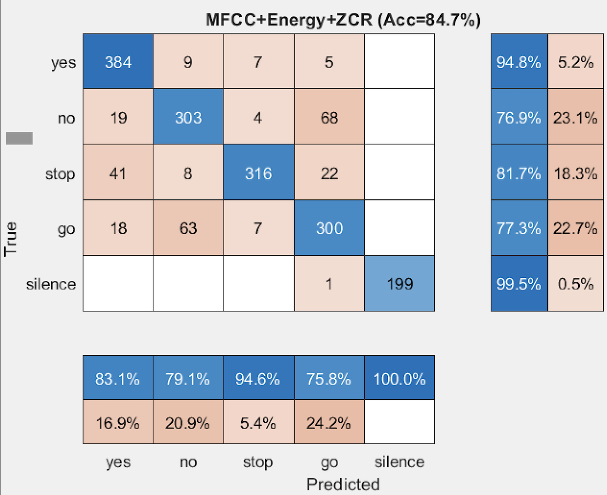
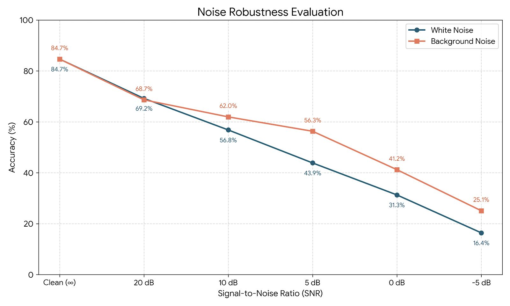
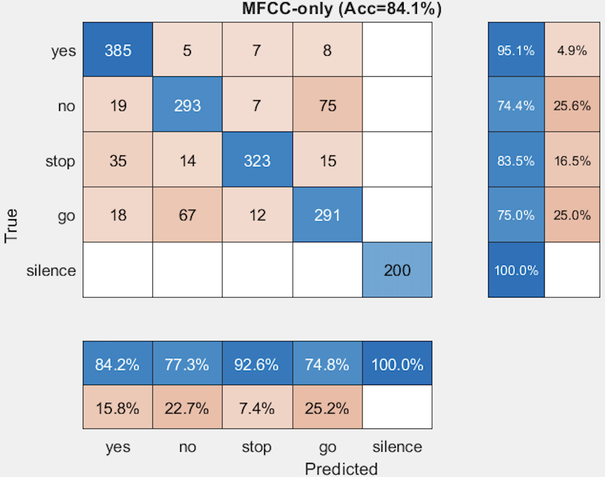
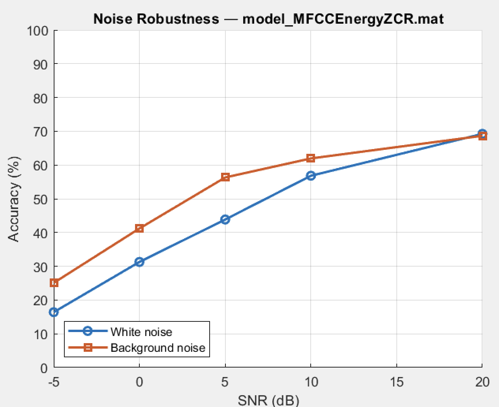

EEE 598 · Speech & Audio Processing · Fall 2025
Lightweight Keyword Spotting with Classical DSP
Can a 30-number fingerprint and a support vector machine hear “yes”, “no”, “stop” and “go”? Mostly, and it shows exactly where it gets confused.
84.67%
test accuracy, 5 classes
30
features per clip
99.5%
silence recall
>50%
accuracy down to 10 dB SNR
The question
Keyword spotting is the always-on wake-word problem: a small device has to pick a few command words out of everything else it hears, on a tight compute budget. Deep networks win the benchmarks but cost memory and power. This project asked how far classical signal processing and a kernel classifier can go, small enough for embedded or system-on-chip use.
How it works
- step 1Data
Data
Google Speech Commands v2, five classes: yes, no, stop, go and silence. Clips resampled to 16 kHz, trimmed, normalized and fixed to one second.
- step 2Features
Features
20–25 ms Hamming windows with a 10 ms hop. Short-time energy, zero-crossing rate and 13 MFCCs, each summarized by its mean and standard deviation: a 30-dimensional vector per clip.
- step 3Models
Models
k-NN (k = 1, 3, 5, 7) against an RBF-kernel SVM with a grid search over kernel scale and the box constraint C, tuned on a validation split and scored once on a held-out test set.
- step 4Stress test
Stress test
White noise and real background noise mixed in at 20, 10, 5, 0 and −5 dB signal-to-noise ratio.
Figures








What it found
01
The SVM on MFCC + energy + ZCR reached 84.67% test accuracy, clearing the project's 75% target.
02
Silence is almost never missed (99.5% recall). The main confusion is “no” versus “go”: 68 “no” clips were heard as “go” and 63 the other way round.
03
Accuracy degrades gracefully: about 69% at 20 dB and still above 50% at 10 dB for both noise types. Real background noise hurt less than white noise at low SNR.
“Hand-crafted features plus a well-tuned kernel get most of the way for a small vocabulary, and the remaining errors are acoustically honest ones.”
In this repository
docs/EEE 598 - Final Project Report-2.docx.pdfFinal report (PDF)docs/Lightweight Keyword Spotting Using Energy and MFCC Features for Embedded Deployment (1).pdfPaper-style write-up (PDF)docs/EEE598_Final_Project_Proposal.pdfProject proposal (PDF)docs/Kws Project Plan (1).pdfFour-phase project plan (PDF)docs/FinalProject.docxReport source (Word)src/Phase1_Preprocessing_Script.pyPython phase 1: resample, trim, normalize, split 70/15/15src/Phase2_Feature_Extraction.pyPython phase 2: energy, ZCR and MFCC featuressrc/Phase3_Classifier_Training.pyPython phase 3: k-NN and SVM training and tuningsrc/Phase4_Testing_Final_Evaluation.pyPython phase 4: test-set and noise evaluationsrc/EEE598_Final_Project.mMATLAB implementation of the full systemsrc/Also: course DSP demos in MATLAB (autocorrelation, filtering, spectrograms, quantization, cepstrum, source-filter)
Run it
The Python pipeline lives in src/ as four phases. It needs the Google Speech Commands v2 dataset downloaded locally.
Point PROJECT_DATA_DIR (phase 1) and PROJECT_IMPLEMENTATION_DIR (every phase) at your own folders, then run phases 1 to 4 in order (python src/Phase1_Preprocessing_Script.py, and so on).
Dependencies: numpy scipy pandas librosa soundfile scikit-learn matplotlib seaborn tqdm.